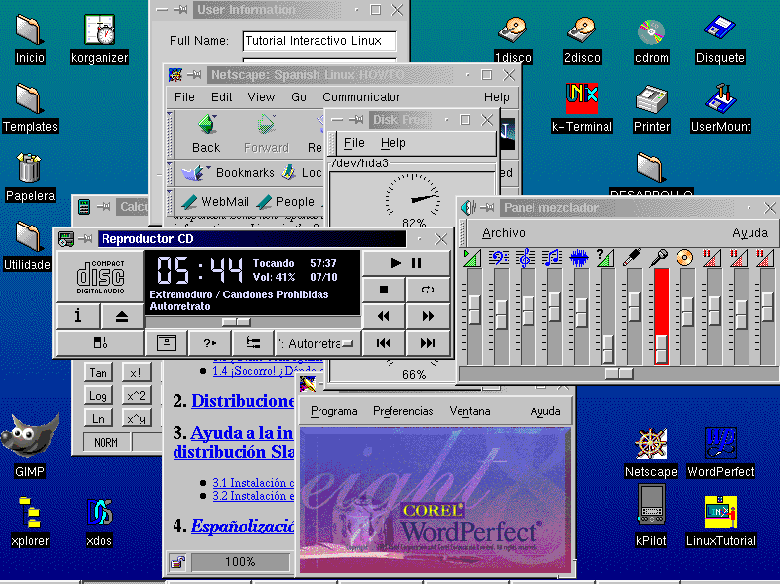
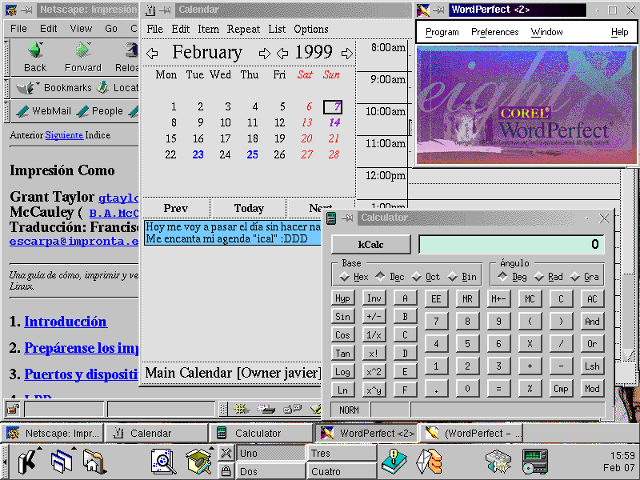

Esta imagen está distorsionada al haberle reducido su tamaño.

X-Window es un MOTOR de ventanas, para configurarlo correctamente deberás de tener instalado una serie de librerías:
Existen varios gestores de ventanas para el mismo entorno gráfico X-Window, como son:
kde
gnome
AfterStep
Fvwm95
AnotherLevel
Enlightelment
...
Esto, por ejemplo no ocurre con otros Sistemas Operativos de entorno gráfico como OS/2, Mac o Windows, que el gestor de Ventanas y el Motor van irremediablemente unidos.
Una vez que tengas instalado el entorno gráfico, podrás instalar el gestor de ventanas.
Si quieres más información te remitimos a /usr/doc/HOWTO así, como /usr/doc/FAQ, además de la abundante información que podrás encontrar en otros directorios de tu Disco Duro local como también son: /usr/info y /usr/doc
A esta imagen se le ha añadido la mejor reducción de colores

Las secciones agregadas para X-Window, creemos que básica y
principalmente las que más importan son 2, como instalar el Motor
de ventanas y como instalar un gestor de ventanas.